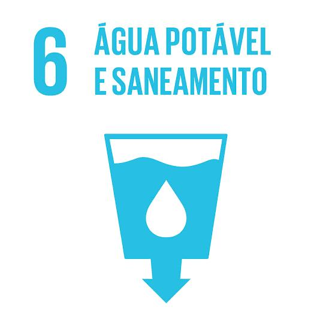

Garantir acesso à água potável e saneamento para todos.
A ODS 6 (Objetivo de Desenvolvimento Sustentável 6) busca garantir a disponibilidade e a gestão sustentável da água e do saneamento para todos. Ela foca no acesso universal à água potável, tratamento de esgoto, uso eficiente da água e proteção de ecossistemas aquáticos, promovendo saúde, bem-estar e sustentabilidade ambiental.
Os principais desafios atuais da ODS 6 incluem a falta de acesso à água potável e saneamento básico em muitas regiões, especialmente em áreas rurais e periferias urbanas. Além disso, há poluição crescente dos recursos hídricos, uso excessivo da água, e infraestrutura insuficiente para tratamento de esgoto. As mudanças climáticas também afetam a disponibilidade de água, tornando o alcance dessa meta ainda mais urgente e complexo.